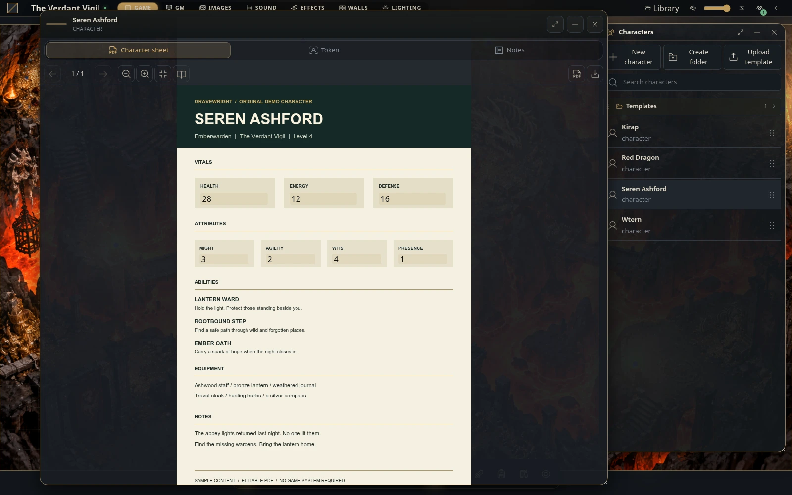
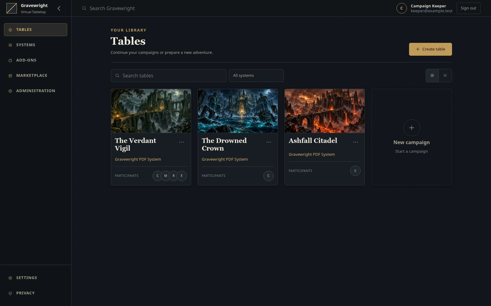

Revele o mundo no seu ritmo
Prepare cenas com paredes, iluminação e névoa e escolha o que o grupo pode ver.
Sua mesa de RPG · Gratuita e open source · Alpha
Seu mundo. Seu grupo. Sua próxima grande sessão.
Disponível: 0.1.3 · Instalador Windows x64 incluído · Próxima versão: 0.2.0 Alpha

Pensado para sua campanha
Prepare os lugares que os jogadores vão explorar. Tenha os personagens e suas descobertas à mão. Na próxima sessão, sua campanha estará pronta para continuar.
Prepare cenas com paredes, iluminação e névoa e escolha o que o grupo pode ver.
Traga as fichas PDF da sua mesa e mapeie os campos para seus personagens.
Mantenha diários, missões e materiais junto dos lugares e pessoas da campanha.
Role dados, toque áudio, compre cartas e acompanhe o combate sem trocar de aplicativo.
Gravewright em ação · 51 segundos
Entre em The Dragon’s Legacy: um campo de batalha cercado por lava, um dragão à espreita e um grupo em movimento. Veja iluminação, névoa e personagens em uma captura real do Gravewright, com trilha orquestral de batalha.
Prepare encontros, organize as anotações da campanha e revele a cena certa quando o grupo chegar.
Entre na mesa hospedada pelo mestre usando o navegador, abra sua ficha e jogue com o grupo.
Mantenha personagens, lugares e descobertas compartilhadas juntos entre as sessões.
Seus personagens à mão
Use fichas PDF com o Gravewright PDF System, mapeie os campos de que precisa e vincule cada personagem a um token. Deixe os detalhes por perto para a próxima decisão.

Vem aí
A próxima Alpha traz fichas independentes por sistema, combate no PDF System, acesso mais rápido ao conteúdo da campanha e uma interface mais coesa. A 0.2.0 está preparada, mas ainda não foi publicada; o download continua na 0.1.3.
Versão disponível ↗
O combate do PDF System ganha retratos dos tokens, indicadores de turno atual e próximo, barras de recursos e descrições de condições.
Busque o conteúdo da campanha pela barra, com resultados limitados ao que cada jogador tem permissão de ler.
Janelas compactas, controles consistentes e preferências dentro da mesa mantêm tudo por perto.
Sistemas de terceiros podem apresentar suas próprias fichas. Autores de módulos ganham catálogos privados de tradução pela API do VTT.
Comece sua campanha
Baixe o Gravewright, execute o instalador Windows e crie sua primeira mesa no navegador. Use o Runner gerado sempre que estiver pronto para jogar.
Windows 10 (1803+) ou Windows 11 · x64 · Navegador com WebGL
Extraia o ZIP completo para uma pasta com permissão de escrita. Mantenha os arquivos juntos.
Abra Install Windows.bat e escolha suas configurações. O instalador baixa as ferramentas necessárias.
Abra Gravewright Runner.bat, crie sua conta de administrador e comece a preparar a campanha. Mantenha o Runner aberto enquanto joga.
Outras formas de hospedar
Prefere um servidor ou uma cópia do código? Use Python 3.14 ou superior e uv. Os comandos abaixo usam um shell POSIX e preservam sua configuração existente.
git clone https://github.com/Gravewright/gravewright.git
cd gravewright
uv sync --locked
cp -n .env.example .env
uv run --locked python manage.py migrate
uv run --locked python main.pyUma mesa que cresce com você
Adicione módulos e sistemas pelo Marketplace ou crie os seus. Conheça o 3D Dice para suas rolagens e o Translator para os catálogos de interface em português e espanhol.
O núcleo do Gravewright usa GPL-3.0-only com uma permissão para módulos independentes. Módulos escritos de forma independente podem usar qualquer licença, inclusive proprietária. Consulte os termos completos na política de licenciamento.
Leia a política de licenciamento ↗Antes de começar
Sim. O Gravewright é gratuito e open source. Você hospeda sua instalação e mantém o controle dos arquivos da campanha. Módulos de terceiros têm suas próprias licenças e condições.
Os jogadores acessam um servidor compartilhado pelo navegador. O Runner Windows inicia localmente; siga o guia de hospedagem para disponibilizar sua instalação ao grupo.
Instale o Translator pelo Marketplace e ative seus idiomas. Cada usuário pode escolher inglês, português brasileiro ou espanhol. Documentos e textos escritos pelo grupo mantêm o idioma original.
O Runner Windows guarda os dados em %LOCALAPPDATA%\Gravewright\data. Encerre o Runner e faça backup dessa pasta antes de atualizar. Instalações em servidor usam os locais que você configurar.
Ainda não. O pacote 0.2.0 Alpha está preparado; o download público continua na 0.1.3. O Gravewright está em desenvolvimento Alpha, então mantenha backups das campanhas importantes.
Sim. O Gravewright aceita sistemas e módulos personalizados com APIs documentadas. Instale extensões de criadores em quem confia; módulos de navegador executam dentro da página da mesa.
Feito com a comunidade
Conte como o Gravewright funciona na sua mesa. Compartilhe uma ideia, relate um problema ou ajude com traduções, acessibilidade e documentação. Desenvolvedores também podem contribuir com o núcleo ou criar seus próprios módulos.
Abra espaço para sua próxima aventura